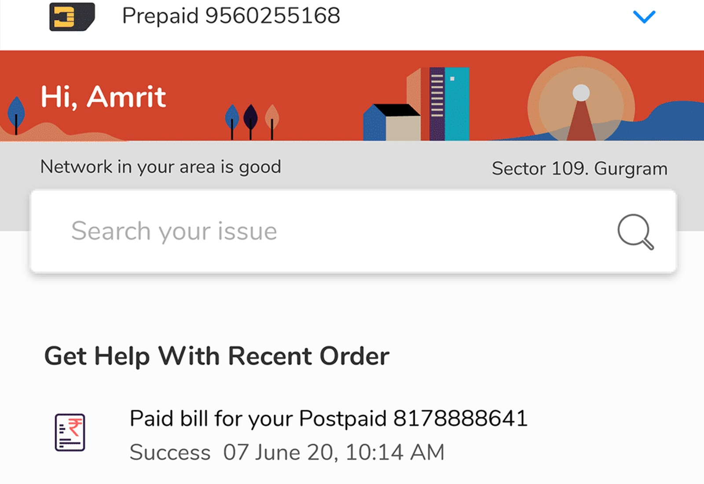

More work
02
Shipped · AI review interface
An AI extracts 128 fields. A lawyer still checks them.
I redesigned this review workflow three times as we learned how people actually used it. Month-four retention went from 5% to 23%.
Read the case study →
03
Design direction · Entering build
The intent model
When should an agent explain, suggest, act, or stay out of the way? I wrote the framework, then used it to rebuild the contract listing: you type a question, the page becomes the answer, and you can save it as an ongoing check.
Read the direction →
04
Shipped · Consumer scale
Support that answers before you ask
One issue drove over four million support calls. I redesigned self-service in a telecom app used by millions, so it used what the person had just done to predict their question instead of handing them a menu.
Read the case study →